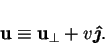
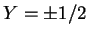
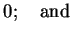

A solution is sought for the limit
 ; the method is
essentially similar to that used in chapter 4 for the narrow cavity limit
(
; the method is
essentially similar to that used in chapter 4 for the narrow cavity limit
(
 ), but here
), but here  is allowed to remain arbitrary.
is allowed to remain arbitrary.
It is convenient to decompose the velocity into horizontal and vertical
components:
|  | (7.6) |
In the limit
 , with Gr,
, with Gr,  , Pr, Sc and
, Pr, Sc and  fixed and
finite, the equations reduce to:
fixed and
finite, the equations reduce to:
There should also be boundary conditions at , corresponding
to the floor and ceiling of the
cavity, but these cannot be met by the solution of equations
(7.7)-(7.12).
As in the narrow cavity limit (ch. 4), the problem is
singular in the sense of perturbation theory; the basic solution cannot be
uniformly valid over the domain. For very large  , however, the region
of nonuniformity should be limited to thin layers near ,
corresponding to a small proportion of the unscaled cavity in terms of
, however, the region
of nonuniformity should be limited to thin layers near ,
corresponding to a small proportion of the unscaled cavity in terms of
 . The full set of equations (2.52)-(2.55) would have
to be solved to obtain the flow in these regions. This restriction
is an advantage for the present work, though, as it means that the same fully
developed solution will apply to both ducts and cavities. Some
distinction between these will be made in §7.3.3.
. The full set of equations (2.52)-(2.55) would have
to be solved to obtain the flow in these regions. This restriction
is an advantage for the present work, though, as it means that the same fully
developed solution will apply to both ducts and cavities. Some
distinction between these will be made in §7.3.3.
Since the horizontal components of the momentum equation (2.54)
have degenerated to a statement of the horizontal uniformity of the pressure
(equations 7.9 and 7.11),
 and
and  are determined only by
the continuity equation (7.7) and the boundary
conditions (7.1). An obvious solution is
are determined only by
the continuity equation (7.7) and the boundary
conditions (7.1). An obvious solution is
|  | (7.14) | ||
| (7.15) |